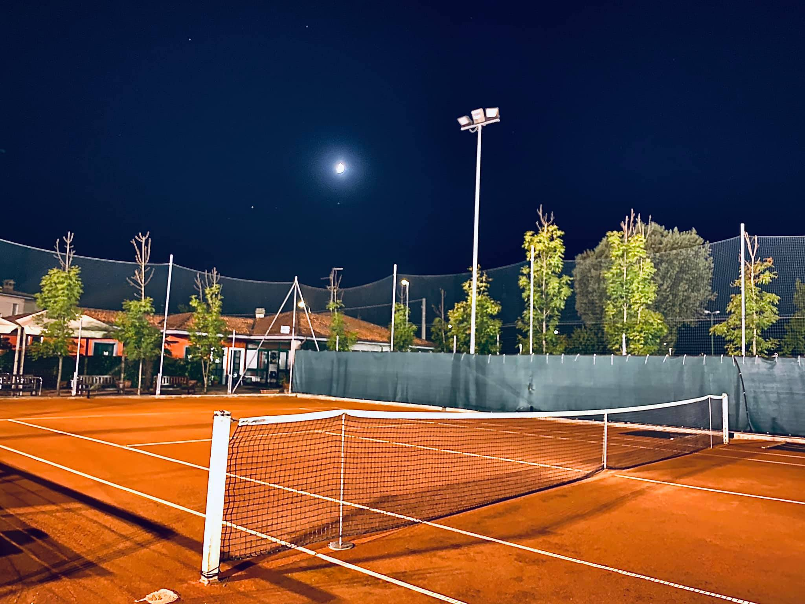
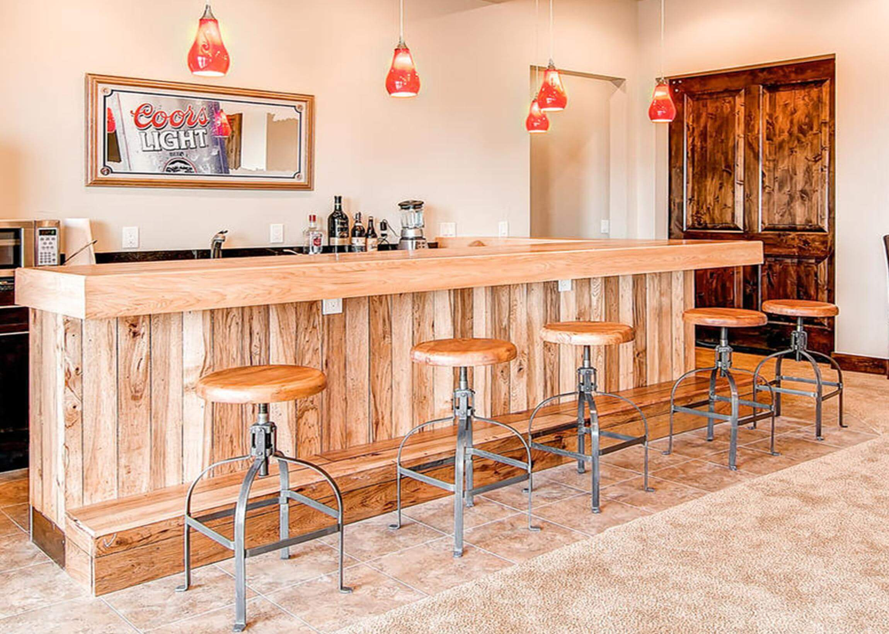
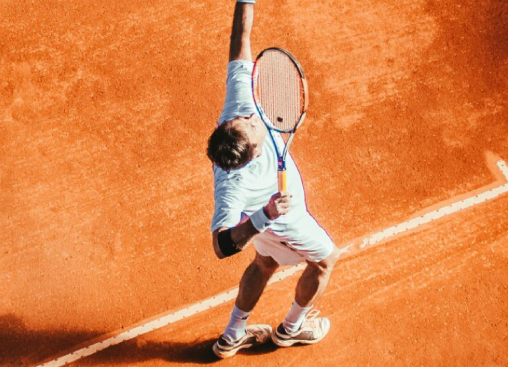

Dal 1970 · Trescore Cremasco
Il nostro campo,
Il nostro campo,
la tua passione.
Campi da tennis di eccellenza, ristorazione curata e un'atmosfera unica a Trescore. Benvenuto nel nostro circolo.
Campi da tennis di eccellenza, ristorazione curata e un'atmosfera unica a Trescore. Benvenuto nel nostro circolo.

4 campi con 2 diverse superfici: terra rossae cemento. Disponibili sia per soci che per ospiti, con sistema di prenotazione online.
Scopri i campi →
Il nostro bar è il cuore sociale del circolo. Colazioni, aperitivi e snack in un ambiente raffinato con vista sui campi.
Scopri il bar →
Una cucina autentica con ingredienti del territorio. Pranzo e cena con menù stagionali, ideale per celebrazioni e cene di squadra.
Scopri il ristorante →
Corsi per ogni livello: dai bambini agli adulti, dai principianti agli agonisti. Maestri federali con esperienza internazionale.
Scopri i corsi →Campi e impianti mantenuti con attenzione costante, per garantire sempre condizioni di gioco ottimali.
Una realtà con oltre 600 soci, dove sport e socialità si incontrano in modo spontaneo.
Maestri certificati seguono giocatori di ogni livello, dai principianti all’attività agonistica.
Uno spazio curato dove fermarsi prima o dopo il gioco, con un’offerta semplice e di qualità.
Situato a Trescore Cremasco, con parcheggio gratuito e accesso comodo.
Il circolo è pensato per ogni età e livello, con un approccio inclusivo e informale.
Prenota un campo, scopri le nostre tessere o vieni a trovarci per un aperitivo. Siamo aperti tutti i giorni.